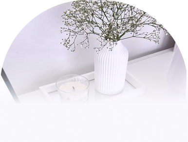
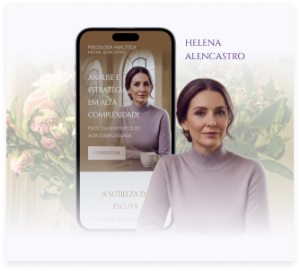
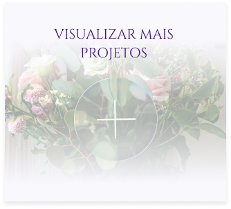

A profundidade da sua escuta merece o prestígio da sua imagem.
SITES COM DIREÇÃO TERAPÊUTICA PARA PSICANALISTAS.
SOLICITAR PROJETO
AUTORIDADE:
ESPELHE SUA TRAJETÓRIA COM DIGNIDADE. NÃO DEPENDA APENAS DE INDICAÇÕES PASSIVAS; ASSUMA O CONTROLE DA SUA IMAGEM E MATERIALIZE A RECONHECIMENTO QUE VOCÊ JÁ CONQUISTOU NO CONSULTÓRIO.
FILTRO:
SELECIONE PACIENTES QUE COMPREENDEM SEU VALOR. USE O RIGOR DO NOSSO MÉTODO PARA EDUCAR O OLHAR DO PÚBLICO E ATRAIR QUEM BUSCA ALTA COMPLEXIDADE E RESPEITA SEU POSICIONAMENTO.
ESSÊNCIA:
TRADUZA SUA VERDADE EM CADA PIXEL. CONSTRUA UMA SEDE DIGITAL QUE COMUNICA SERENIDADE E CONFIANÇA INABALÁVEL, REFLETINDO SUA ALMA PROFISSIONAL COM ABSOLUTA CLAREZA.
Substituímos os formulários técnicos por uma investigação profunda da sua marca para identificar o seu "ponto de cura" e a alma da sua abordagem, garantindo um ambiente digital que realmente expresse sua essência.
Transformamos os detalhes do seu atendimento em uma arquitetura de acolhimento, onde cada elemento comunica uma autoridade silenciosa que acolhe o paciente antes mesmo da primeira sessão.
Uma implementação rigorosa e segura em 10 dias, desenhada para que você pareça a referência que já é nos estudos, filtrando quem busca preço e atraindo quem valoriza a alta complexidade.

 Sintonia de Imagem: Ajustamos sua presença digital para refletir sua real experiência, garantindo que quem te encontra sinta sua autoridade de imediato.
Espaço de Acolhimento: Desenhamos um site que funciona como uma sala de espera serena, onde o paciente se sente cuidado antes mesmo da consulta.
Contato Sem Ruídos: Organizamos o acesso ao seu WhatsApp de forma discreta e segura, facilitando o agendamento sem poluir o visual do seu espaço.
Cuidado e Agilidade: Entregamos sua estrutura pronta em até 7 dias, a partir da data de início de desenvolvimento, com o rigor técnico e a proteção ética que a sua profissão exige.
Sintonia de Imagem: Ajustamos sua presença digital para refletir sua real experiência, garantindo que quem te encontra sinta sua autoridade de imediato.
Espaço de Acolhimento: Desenhamos um site que funciona como uma sala de espera serena, onde o paciente se sente cuidado antes mesmo da consulta.
Contato Sem Ruídos: Organizamos o acesso ao seu WhatsApp de forma discreta e segura, facilitando o agendamento sem poluir o visual do seu espaço.
Cuidado e Agilidade: Entregamos sua estrutura pronta em até 7 dias, a partir da data de início de desenvolvimento, com o rigor técnico e a proteção ética que a sua profissão exige.

